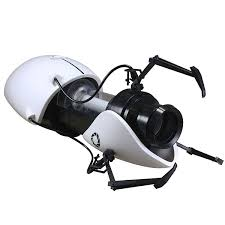

Patented Aperture Science Inventions
Hello there valuable investors and curious applicants alike, and welcome to our inventions page where
where you can see just what the heck you'll be dealing with in our test chambers!
-
Long Fall Boots:
These scientific beauties of a fashion statement absorb all the impact
of a fall; so you don't have to! -
Turrets:
These little guys may appear to be cute, but they have one heck of a bite.
Fun to look at, just make sure they're not looking back! -
Panels:
When 4 walls and a roof just isn't good enough for you,
there's Aperture Science Panels. Safe, fully configurable,
and helpful! What test chamber shouldn't be made out of these! -
Portal Gun:
This is the pride and joy of Aperture Science. Walls are no longer obstacles,

they're just another way to get to point A to point B using the Portal Gun!
These are just a few of the amazing products that Aperture Science has to offer. If you want to try
these first hand, then try applying at the available openings today!